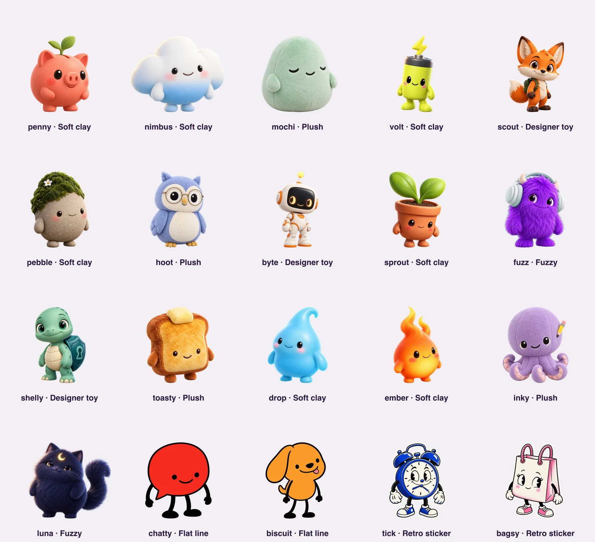

Mascot Designer, in plain words
A skill for Claude Code that gives your app or website a character: a little creature that stands for what the product does, drawn in nine poses, with the animation and code to drop it straight in.
You ask for it in a sentence. Claude asks up to four quick questions, shows you ideas, and about ten minutes later hands over a finished kit.
- make a mascot for my app
- I want a character for my website
- give my app a Duolingo-style mascot
- put the mascot in my app
How a run goes
- Open Claude Code in your projectIt reads the app's name, what it does and its brand colour first, so it doesn't ask what it can find.
- Answer one round of questionsWhat should the mascot stand for, its personality, its colour, and where it will live.
- Pick one of three ideasThree different characters for the same meaning, shown side by side. You can ask for another round.
- Wait for the posesEvery pose of your pick is drawn, cleaned up and lined up. Three to eight minutes.
- Watch the filmYou see the mascot living in an iPhone app and a Mac app before anything else.
- Say where it goesClaude copies the files into your app and places each move where it belongs.
Two ways to get one
One of a kind
Drawn from scratch for your product. It uses your own OpenAI account: an API key, or ChatGPT signed in through the Codex app. A mascot is about 12 images (3 ideas, 9 poses), charged to that account.
To switch it on, run codex login, or put OPENAI_API_KEY=sk-... in ~/.mascot-designer/.env.
From the ready-made twenty
No account needed. Claude matches your product to one of 20 finished mascots, renames it, recolours it to your brand and rewrites what it stands for.
Other people using the skill can pick the same character. Only a one-of-a-kind mascot is yours alone.

What lands in your folder
- A 32-second filmThe mascot doing every move inside a realistic iPhone app and Mac app.
- A character sheetName, what it stands for, palette and all nine poses on one poster.
- For iPhone and MacAn Xcode asset catalog and a SwiftUI view (iOS 17+, macOS 14+).
- For the webA
<mascot-view>element with the same moves, frame for frame. - Every pose as a PNG1024 px, transparent background.
- A how-to fileThe exact lines to paste for your platform.
On your own computer the folder is ~/Desktop/Mascots/<Name>/. In a cloud session, ask Claude to save the kit into your repository so it isn't lost when the session ends.
The moves, and where each belongs
Every mascot gets the same set of moves. Tapping the mascot always gives a little squish.
| Move | What it does | Use it for |
|---|---|---|
| idle | Breathes, sways, blinks | Wherever it rests |
| appear | Pops in with sparkles | First launch, a panel opening |
| hello | Waves with its whole body | Onboarding, welcome back |
| think | Hand on chin, thought bubble | Waits longer than a second: loading, syncing |
| celebrate | Jumps, arms up, confetti | Real wins: saved, goal reached, purchase done |
| oops | Flinches, then looks worried | Errors that come with a way out |
| sleep | Sits, slow breaths, Zzz | Empty states, offline |
| point | Leans in and points | One tip at a time: a new feature, the next step |
| love | Hugs a beating heart | Thank you, rate us, upgrade done |
- One mascot moment per screen. It is a character, not wallpaper.
- Keep
celebratefor real wins. If everything celebrates, nothing does. - An
oopsalways comes with the fix, such as a Try again button.
On a website
Copy mascot.js and the mascot's folder into your site's public files, then:
<script type="module" src="/mascot.js"></script>
<mascot-view src="/penny" state="hello"></mascot-view>
<script type="module">
const m = document.querySelector("mascot-view");
m.play("think");
try { await save(); m.play("celebrate"); } catch { m.play("oops"); }
</script>In an iPhone or Mac app it is one line of SwiftUI: PennyView(move: .celebrate).
Changing it later
- A colour: "make the mascot our brand blue". Claude previews it first.
- One pose: "redo the thinking pose, keep it standing".
- The name or its lines: "rename it Pip" or "change what it says on the empty screen".
Needs Claude Code and Node.js 18 or newer. Films and sheets are rendered with Chrome, Edge or Chromium.